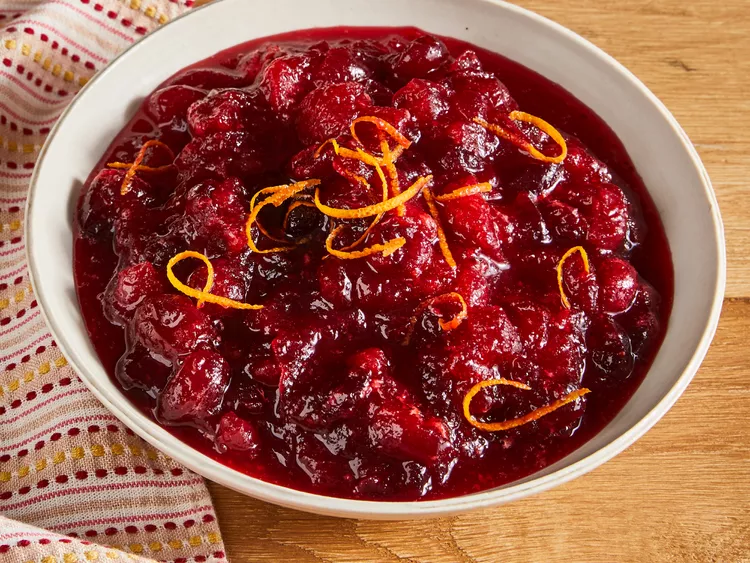

Cranberry Sauce

Description
This cranberry sauce recipe uses fresh cranberries, sugar, and orange juice to make a Thanksgiving classic.
Ingredients
-
Fresh Cranberries: Opt for fresh cranberries that are firm, plump, and blemish-free.
Lighter colored cranberries are best for sauce, as they contain more pectin and result in a thicker
consistency.
-
Sugar: White sugar does more than add sweetness to classic cranberry sauce: It also absorbs
liquid and, when heated, thickens the sauce.
-
Orange Juice: All cranberry sauce starts with a liquid base. If you don't like orange
juice, you can substitute pomegranate juice or even red wine.
Steps
-
Step 1:
Gather all ingredients.
-
Step 2:
Dissolve sugar in the orange juice in a medium saucepan over medium heat.
-
Step 3:
Stir in the cranberries and cook until they start to pop, about 10 minutes.
-
Step 4:
Remove from heat and place sauce in a bowl. It will thicken as it cools.
-
Step 5:
Enjoy!